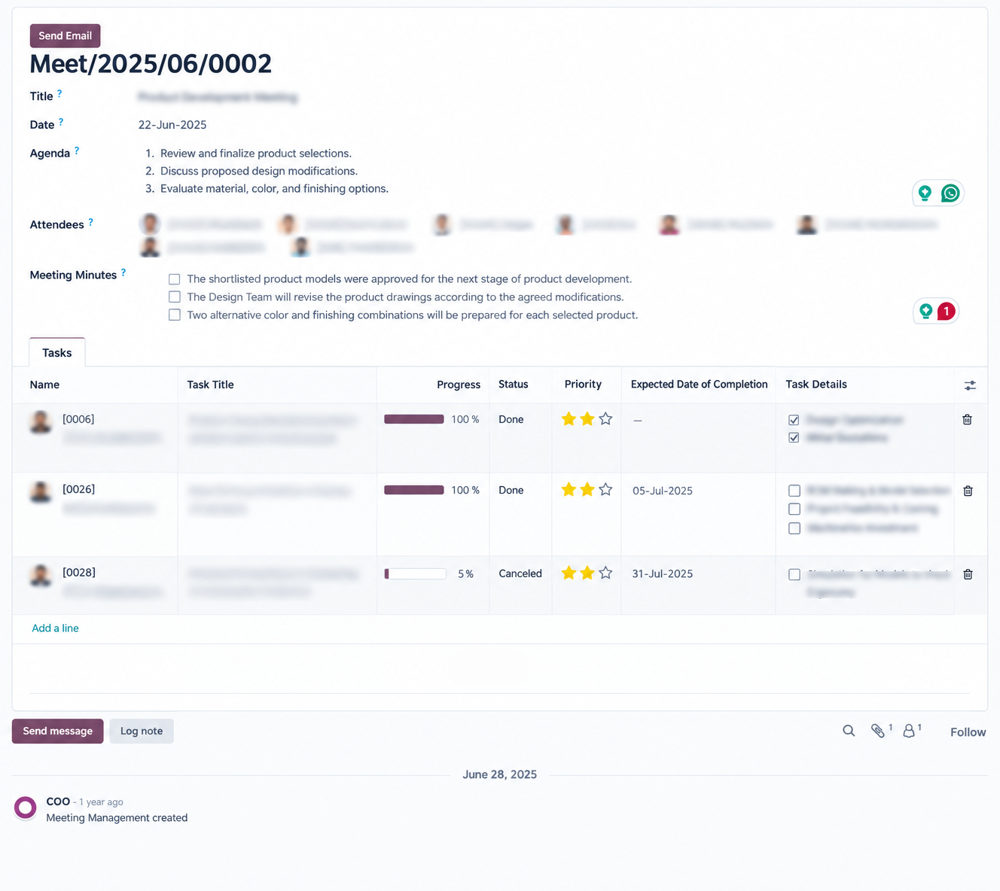

Stop losing the decisions taken in your meetings. This module records the agenda and the minutes of every meeting, keeps the list of attendees, and turns the follow-up points into real tasks that somebody owns and somebody chases.
Those follow-up tasks are ordinary project.task records, so they appear in
the Project app with all of its kanban, calendar, deadline and timesheet features.
There is no second task model to maintain and no data locked inside a custom screen.
Meet/2026/09/0001.mail.template, so you can restyle it without touching code.project.task model.Set the title and the date, pick the attendees, and write the agenda. The meeting reference is generated for you.
The minutes field is a full rich text editor, so headings, lists and tables all survive.
Add a line opens a popup with the task title, the owner, the deadline and the progress. Each task stays linked to the meeting it came from.
Send Email builds one message per meeting, addressed to the work email of every attendee, with the meeting attachments included.

The stage of a task tells you what somebody set. Smart Status tells you what actually happened, by reading the deadline and the completion date together with the state.
| Smart Status | Meaning |
|---|---|
| Delayed | Still open and the deadline has passed. |
| In Progress | Work has started and the deadline is still ahead. |
| Not Started | Nobody has picked it up yet and the deadline is still ahead. |
| Done | Closed on or before the deadline. |
| Done Delayed | Closed, but after the deadline. The one your follow-up meeting needs to see. |
| Cancelled | Dropped. |
A stored field cannot notice that today has moved on by itself, so a scheduled action named Meeting: Refresh Task Smart Status recomputes the open tasks once a day.
mail, hr and project only. No third party or custom module needed.hr.meeting, with mail.thread for chatter and tracking.project.task. No parallel task model is introduced.ir.sequence, so you can change the format from the interface.